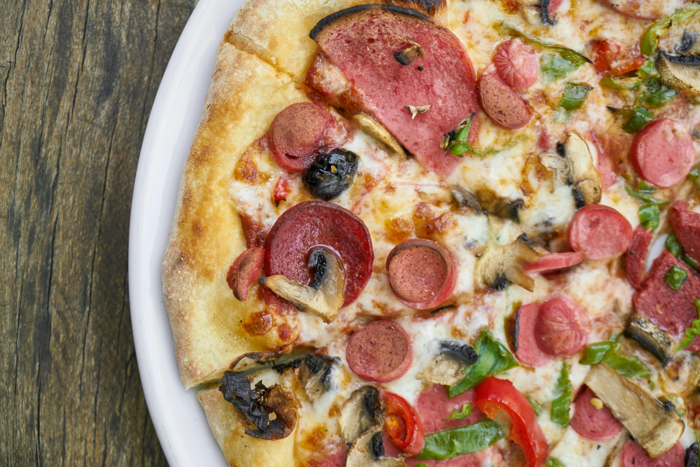

Pizza

Description of the pizza recipe.
Pizza is a beloved Italian dish that has gained popularity worldwide. It consists of a thin, crispy crust topped with tomato sauce, mozzarella cheese, and a variety of toppings such as pepperoni, mushrooms, bell peppers, and olives. The pizza is baked in a hot oven until the crust is golden and the cheese is bubbly and slightly browned.
This versatile dish can be customized with different sauces, cheeses, and toppings to suit various tastes. Whether you prefer a classic Margherita or a loaded meat lovers pizza, there's a version for everyone. Pizza's origins trace back to Naples, Italy, where it has been a staple of home cooking and social gatherings for generations.
Ingredients
- Pizza dough (store-bought or homemade) – 1 ball
- Tomato sauce – 1/2 cup
- Mozzarella cheese – 200 grams (about 7 oz), shredded
- Pepperoni slices – 10-15 slices (optional)
- Mushrooms – 100 grams (about 3.5 oz), sliced
- Bell peppers – 2 medium, sliced
- Onion – 1 medium, sliced
- Olives – 50 grams (about 1.75 oz), pitted and sliced
- Olive oil – 2 tablespoons
- Garlic powder – 1 teaspoon
- Italian seasoning – 1 teaspoon
- Salt – to taste
- Black pepper – to taste
Instructions
- Preheat the oven to 220°C (425°F).
- Roll out the pizza dough on a floured surface to your desired thickness.
- Transfer the rolled-out dough to a baking sheet or pizza stone.
- Spread the tomato sauce evenly over the dough, leaving a small border around the edges.
- Sprinkle the shredded mozzarella cheese over the sauce.
- Add your desired toppings evenly across the pizza.
- Drizzle with olive oil and season with garlic powder, Italian seasoning, salt, and pepper.
- Bake in the preheated oven for 12-15 minutes, or until the crust is golden and the cheese is bubbly and slightly browned.
- Remove from the oven and let it cool for a few minutes before slicing and serving.
Back to Home